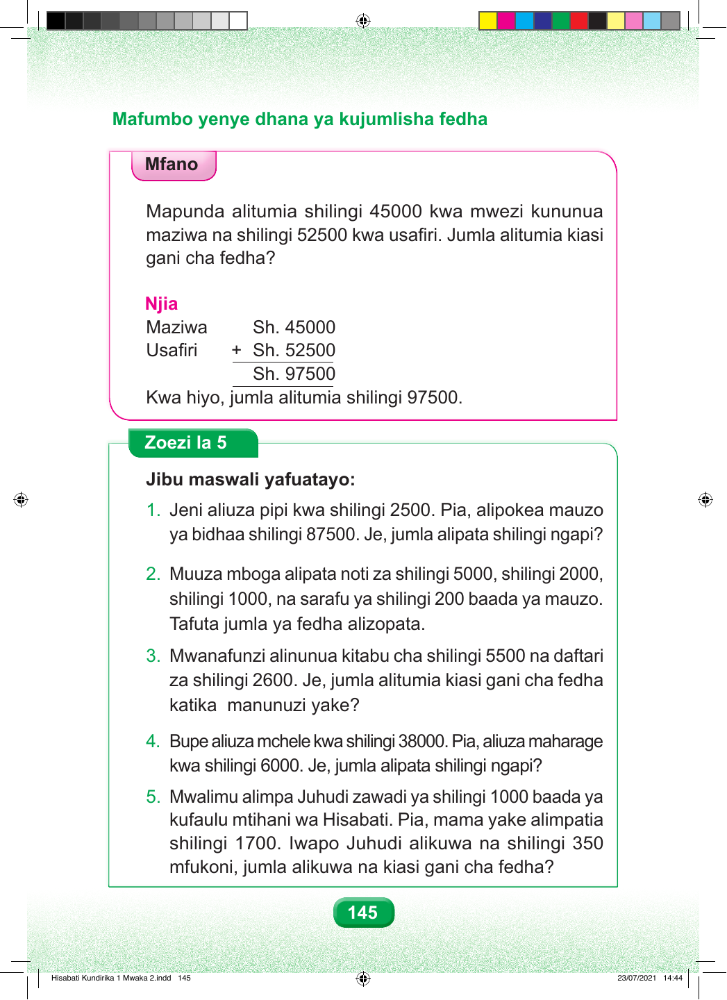

Mafumbo yenye dhana ya kujumlisha fedha Mfano. Mapunda alitumia shilingi elfu arobaini na tano kwa mwezi kununua maziwa, na shilingi elfu hamsini na mbili mia tano kwa usafiri. Jumla alitumia kiasi gani cha fedha? Njia. Panga gharama kwa wima. Maziwa: shilingi elfu arobaini na tano. Usafiri: jumlisha shilingi elfu hamsini na mbili mia tano. Jumla ni shilingi elfu tisini na saba mia tano. Kwa hiyo, jumla alitumia shilingi elfu tisini na saba mia tano. Zoezi la Tano. Jibu maswali yafuatayo. Swali namba moja. Jeni aliuza pipi kwa shilingi elfu mbili mia tano. Pia alipokea mauzo ya bidhaa shilingi elfu themanini na saba mia tano. Je, jumla alipata shilingi ngapi? Swali namba mbili. Muuza mboga alipata noti za shilingi elfu tano, shilingi elfu mbili, shilingi elfu moja, na sarafu ya shilingi mia mbili baada ya mauzo. Tafuta jumla ya fedha alizopata. Swali namba tatu. Mwanafunzi alinunua kitabu cha shilingi elfu tano mia tano na madaftari ya shilingi elfu mbili mia sita. za shilingi 2600. Je, jumla alitumia kiasi gani cha fedha Je, jumla alitumia kiasi gani cha fedha katika manunuzi yake? Swali namba nne. Bupe aliuza mchele kwa shilingi elfu thelathini na nane. Pia aliuza maharage kwa shilingi elfu sita. Je, jumla alipata shilingi ngapi? Swali namba tano. Mwalimu alimpa Juhudi zawadi ya shilingi elfu moja baada ya kufaulu mtihani wa Hisabati. Mama yake alimpatia shilingi elfu moja mia saba. Iwapo Juhudi alikuwa na shilingi mia tatu hamsini mfukoni, jumla alikuwa na kiasi gani cha fedha? mfukoni, jumla alikuwa na kiasi gani cha fedha? 145 Hisabati Kundirika 1 Mwaka 2.indd 145 23/07/2021 14:44